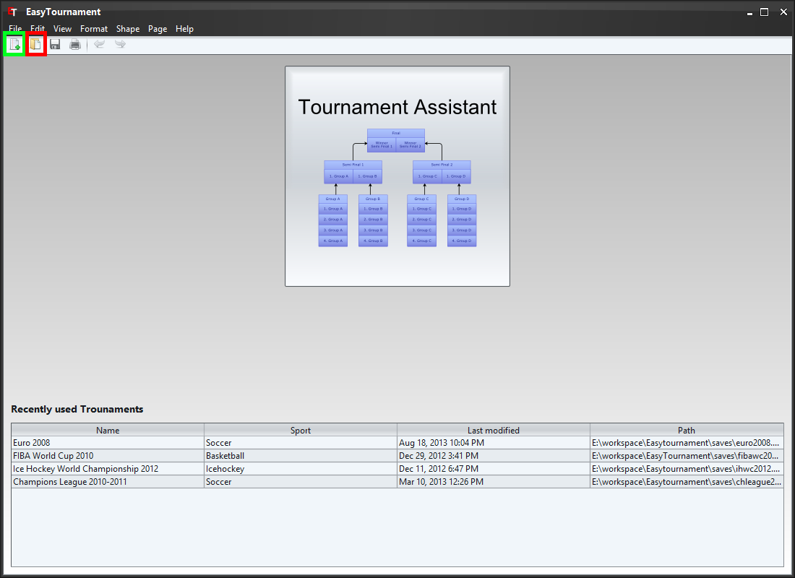

To create a new tournament choose the menu "File"->"New tournament" or click on the corresponding icon (marked green in the image above).
The Tournament Assistant allows to easily create a tournament with up to 32 Teams. Read more at Turnier Assistant
You can open an existing tournament with the menu "File"->"Open tournament" or if you click on the corresponding icon (marked red in the image above) and select the desired file.
If you had opened a tournament recently it is listed in the table on the bottom of the window and can be opened with a click on the corresponding row.